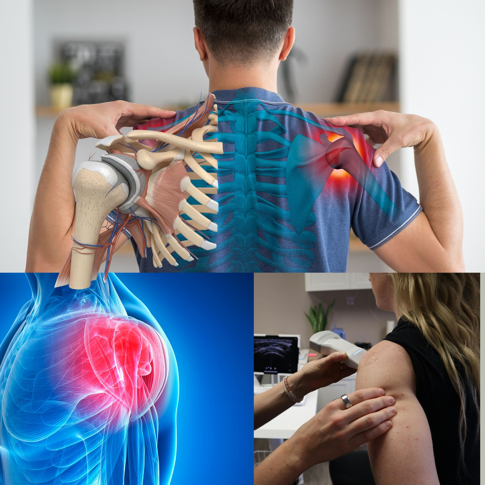

La bursite de l'épaule expliquée : symptômes, causes et traitement de la bursite sous-acromiale
Avez-vous mal en haut ou sur le côté de l'épaule quand vous levez le bras pour atteindre une étagère, vous coiffer ou enfiler une veste ? La douleur vous réveille-t-elle la nuit quand vous vous retournez sur ce côté ? Elle a peut-être commencé après une longue journée de peinture, de jardinage ou de port de charges, ou bien elle s'est installée sans raison évidente. Il peut s'agir d'une bursite de l'épaule, le plus souvent au niveau d'un petit coussin appelé bourse sous-acromiale. C'est fréquent, douloureux, et cela guérit en général bien sans chirurgie.
Qu'est-ce qu'une bourse séreuse ?
Une bourse séreuse est une fine poche aplatie contenant un peu de liquide lubrifiant. Votre corps en compte des dizaines, placées partout où un tendon ou un muscle doit glisser sur un os. Imaginez-la comme un coussin glissant qui permet aux structures de se déplacer l'une contre l'autre sans frotter. Lorsqu'une bourse est irritée, elle s'enflamme, s'épaissit et se remplit de liquide en excès. C'est ce qu'on appelle une bursite.
Qu'est-ce que la bursite de l'épaule ?
La bursite de l'épaule est l'inflammation de l'une des bourses séreuses situées autour de l'épaule. La plus fréquente de loin est la bourse sous-acromiale (ou sous-acromio-deltoïdienne), et c'est pourquoi la plupart des médecins pensent à elle quand ils parlent de “bursite de l'épaule”. Plus rarement, d'autres bourses situées près de l'omoplate ou à l'avant de l'épaule peuvent être touchées. Une bursite peut aussi survenir à d'autres articulations, comme le coude, la hanche et le genou, mais il s'agit d'affections différentes.
La bursite sous-acromiale en détail
L'acromion est la pointe osseuse située en haut de l'omoplate, qui forme une voûte au-dessus de l'articulation de l'épaule. Sous cette voûte passent les tendons de votre coiffe des rotateurs, et entre les tendons et l'os se trouve la bourse sous-acromiale. À chaque fois que vous levez le bras, les tendons et la bourse doivent glisser dans un espace étroit sous cette voûte.
Quand cet espace devient encombré, la bourse est pincée et frottée. Cela peut arriver si les tendons gonflent, si l'os est irrégulier ou présente un bec osseux, si l'omoplate bouge mal, ou si l'épaule est surmenée. La bourse réagit en s'enflammant, ce qui rétrécit encore l'espace et aggrave la douleur. Les médecins regroupent souvent ce tableau sous des noms tels que syndrome douloureux sous-acromial ou conflit sous-acromial.
En pratique, la bursite voyage rarement seule. La bourse et les tendons de la coiffe des rotateurs sont voisins et sont le plus souvent irrités ensemble. C'est pourquoi le traitement des deux est presque identique.
Les signes d'alerte
- Une douleur en haut ou sur la face externe de l'épaule, irradiant parfois vers le haut du bras, mais rarement sous le coude.
- Un arc douloureux : une douleur qui apparaît quand vous levez le bras sur le côté, en général entre environ 60 et 120 degrés (grossièrement de la hauteur de la taille à juste au-dessus de l'épaule), et qui s'atténue quand le bras monte plus haut ou redescend.
- Une douleur lors des activités au-dessus de la tête, comme étendre le linge, atteindre une étagère haute ou se laver les cheveux.
- Une douleur nocturne, surtout en dormant sur l'épaule atteinte.
- Une sensibilité à la pression juste sous la pointe osseuse de l'épaule.
- Une difficulté à porter la main derrière le dos, ou une sensation d'accrochage ou de pincement pendant le mouvement du bras.
- Un léger gonflement ou une chaleur dans certains cas, mais la bourse est profonde et le gonflement n'est souvent pas visible.
- Une faiblesse surtout due à la douleur, car vous ne pouvez pas forcer malgré l'inconfort.
Quelles en sont les causes ?
- Les gestes répétés au-dessus de la tête : peinture, étendage du linge, menuiserie, port de charges, natation, sports de raquette, musculation.
- Une augmentation brutale de l'activité, comme un week-end de gros bricolage ou un nouveau programme d'entraînement.
- Une tendinopathie de la coiffe des rotateurs, la compagne et le déclencheur les plus fréquents.
- Une chute ou un choc direct sur la pointe de l'épaule.
- Une mauvaise posture, surtout un dos arrondi et des épaules projetées vers l'avant, qui rétrécissent l'espace sous l'acromion.
- L'âge : les tendons et l'os se modifient avec le temps, et les symptômes sont les plus fréquents après 40 ans.
- Des calcifications dans le tendon de la coiffe, qui peuvent provoquer une douleur brutale et intense.
- Les maladies inflammatoires, comme la goutte, la polyarthrite rhumatoïde et d'autres formes de rhumatisme.
- Le diabète et les maladies de la thyroïde, qui rendent les problèmes d'épaule plus fréquents et plus longs à guérir.
- Une infection, rare mais importante, détaillée ci-dessous.
Une cause plus rare mais grave : la bursite infectieuse
Il arrive qu'une bourse soit infectée par des bactéries. C'est beaucoup moins fréquent à l'épaule que dans les bourses superficielles comme celles du coude ou du genou, mais cela peut survenir chez les personnes diabétiques, dont les défenses immunitaires sont affaiblies, après une infiltration récente ou en cas de plaie cutanée près de l'épaule. L'épaule est alors typiquement chaude, rouge, gonflée et très douloureuse, souvent avec de la fièvre. Cela nécessite une évaluation médicale urgente et des antibiotiques, parfois un drainage.
Est-ce vraiment une bursite ? Comment le diagnostic est posé
Une douleur d'épaule a de nombreuses causes : rupture de la coiffe des rotateurs, épaule gelée, arthrose de l'épaule ou de l'articulation de la clavicule, nerf comprimé au niveau du cou et, parfois, le cœur. Le diagnostic associe en général :
- Votre histoire et un examen, qui évalue la mobilité, la force et des tests particuliers reproduisant la douleur quand les tendons et la bourse sont comprimés.
- Une échographie, comme sur l'image ci-dessus. Elle est rapide et indolore, peut montrer une bourse épaissie ou remplie de liquide ainsi que des anomalies des tendons, et permet d'observer l'épaule en mouvement.
- Une radiographie, pour rechercher de l'arthrose, un bec osseux ou des calcifications.
- Une IRM, réservée aux douleurs sévères, aux douleurs survenant après un traumatisme ou aux cas qui ne s'améliorent pas après plusieurs semaines, surtout pour rechercher une rupture de la coiffe.
- Des analyses de sang, et parfois un prélèvement du liquide, si l'on soupçonne une infection ou une maladie inflammatoire comme la goutte ou la polyarthrite rhumatoïde.
Un indice utile : dans la bursite et la tendinite, une autre personne peut en général lever complètement votre bras même si cela fait mal, alors que dans l'épaule gelée l'articulation elle-même est raide et ne peut pas être mobilisée passivement.
Que se passe-t-il si on ne la traite pas ?
Forcer malgré la douleur peut conduire à une gêne durable, une perte de force et une épaule raide. Plus la bourse et les tendons sont irrités, plus le risque est grand qu'un tendon s'effiloche ou se rompe avec le temps. Une évaluation précoce et une rééducation adaptée permettent le plus souvent de l'éviter.
Comment la traite-t-on ?
- Le repos relatif. Évitez les mouvements qui déclenchent la douleur, surtout les travaux répétés au-dessus de la tête, mais n'immobilisez pas complètement l'épaule. Une épaule raide est un problème plus important qu'une bourse irritée.
- Le soulagement de la douleur. Paracétamol, ou courte cure d'anti-inflammatoires en comprimés ou en gel s'ils vous conviennent. Une poche de froid enveloppée dans un linge pendant 15 à 20 minutes peut apaiser une poussée.
- La kinésithérapie et les exercices. C'est la pierre angulaire du traitement. D'abord des mouvements doux, puis un renforcement progressif des muscles de la coiffe et de l'omoplate, qui améliore la façon dont l'épaule bouge et crée plus de place sous l'acromion. La plupart des patients ont besoin de 6 à 12 semaines environ.
- L'infiltration de corticoïdes dans la bourse, idéalement guidée par échographie afin d'atteindre exactement le bon endroit. Elle peut apporter un bon soulagement pendant quelques semaines et vous aider à participer à la rééducation, mais des infiltrations répétées peuvent fragiliser le tendon : elles sont donc utilisées avec parcimonie.
- Le traitement de la cause, par exemple l'équilibre d'un diabète ou le traitement de la goutte ou de la polyarthrite rhumatoïde.
- Les antibiotiques et le drainage si la bourse est infectée.
- La chirurgie est rarement nécessaire. La décompression sous-acromiale par arthroscopie est parfois envisagée lorsque plusieurs mois de traitement bien conduit ont échoué, mais des études ont montré que, pour beaucoup de patients, elle n'est pas plus efficace qu'une rééducation structurée : ce n'est donc pas une option de routine.
Combien de temps dure la guérison ?
Une poussée légère peut s'estomper en quelques semaines. Une douleur plus ancienne, surtout si la coiffe des rotateurs est aussi touchée, demande souvent deux à trois mois de rééducation régulière, parfois davantage. L'amélioration est généralement progressive plutôt que soudaine, et c'est la poursuite des exercices qui prévient la récidive.
Les habitudes qui aident
- Échauffez-vous avant une activité au-dessus de la tête ou sportive, et progressez graduellement.
- Faites des pauses régulières lors des travaux répétitifs au-dessus de la tête.
- Évitez de dormir sur le côté douloureux et posez le bras sur un petit oreiller.
- Gardez les objets du quotidien entre la taille et la poitrine.
- Améliorez votre posture, surtout au bureau et quand vous utilisez votre téléphone.
- Poursuivez les exercices de renforcement après la disparition de la douleur.
Quand consulter rapidement
- 🔴 Une douleur d'épaule ou de bras avec douleur thoracique, essoufflement ou sueurs : appelez le SAMU (114) ou rendez-vous immédiatement à l'hôpital.
- 🔴 Une épaule chaude, rouge, gonflée et très douloureuse, surtout avec de la fièvre : une infection doit être écartée en urgence.
- 🔴 Une faiblesse brutale ou l'impossibilité de lever le bras après une chute ou un traumatisme : il peut s'agir d'une rupture de la coiffe.
- 🟡 Des engourdissements ou des fourmillements dans le bras, ou une douleur du cou qui irradie dans le bras.
- 🟡 Une douleur qui ne s'améliore pas après 4 à 6 semaines, ou qui vous réveille la nuit.
- 🟡 Vous avez un diabète, une goutte ou une polyarthrite rhumatoïde, ou vous prenez des médicaments qui affaiblissent vos défenses immunitaires.
- 🟡 Vous avez une maladie rénale, un ulcère de l'estomac, une maladie cardiaque ou vous prenez des anticoagulants, car de nombreux antalgiques peuvent ne pas vous convenir.
L'essentiel à retenir
La bursite de l'épaule, et en particulier la bursite sous-acromiale, est fréquente et très bien traitable. La plupart des patients guérissent avec un repos relatif, les bons exercices et du temps, sans avoir besoin de chirurgie. Plus l'épaule est évaluée et rééduquée tôt, plus vite vous reprenez vos activités habituelles.
Si votre douleur d'épaule dure, perturbe votre sommeil ou limite votre travail, n'attendez pas qu'elle passe toute seule. Consultez toujours votre médecin avant de commencer ou d'arrêter un médicament.
Une douleur d'épaule qui ne passe pas, ou qui vous réveille la nuit ? Contactez-nous directement.
Écrire sur WhatsAppCet article fournit des informations générales sur la santé et ne remplace pas une consultation médicale. En cas d'urgence médicale, appelez le SAMU (114) ou rendez-vous à l'hôpital le plus proche.